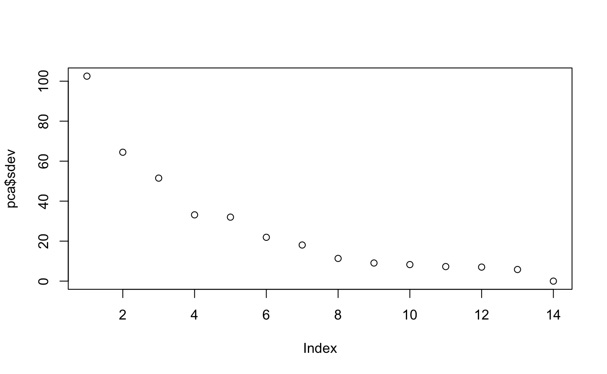
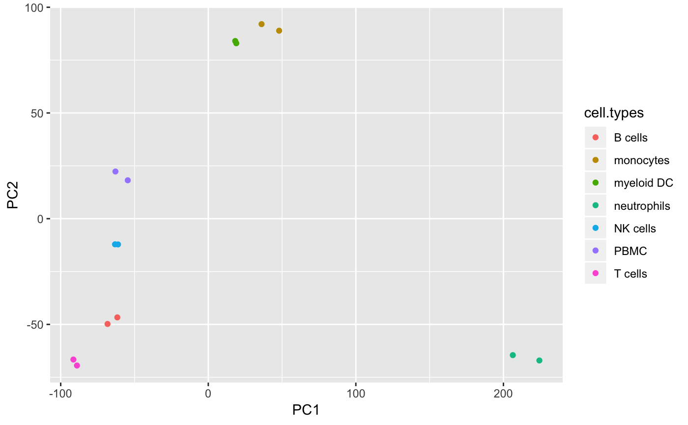
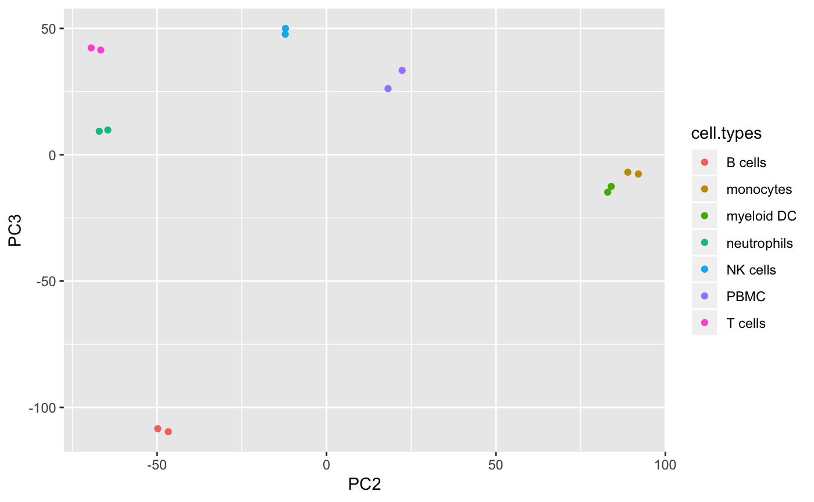
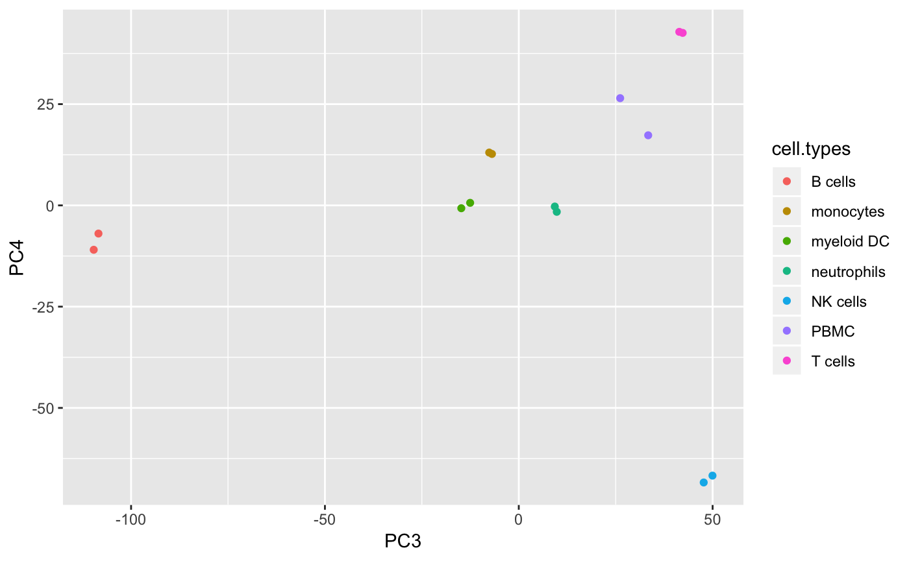
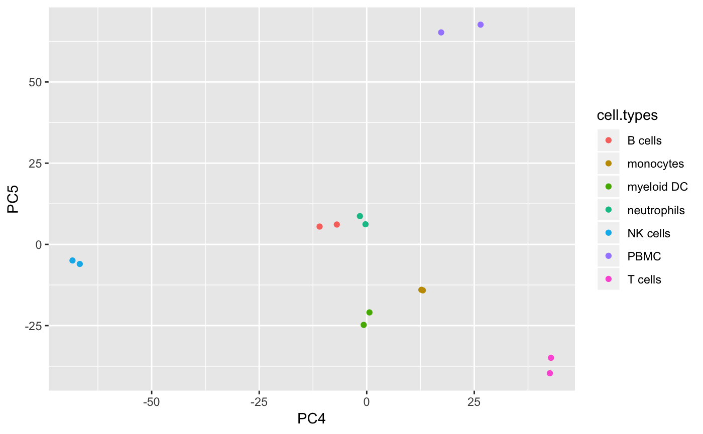

Here is some sample code to determine which PCs discriminate cell types. This assumes that you have already subset your data to the genes that are overlapping between single cell experimental RNA data, and the bulk RNA data with known tissue types which you would like to use to learn the most likely tissue types of your single cell clusters.
First, perform an appropriate log transformation to your bulk RNA data.
## primary human B cells rep 1 primary human myeloid DC rep 1
## LINC00115 55 79
## FAM41C 15 6
## SAMD11 193 198
## NOC2L 2038 1826
## KLHL17 553 581
## PLEKHN1 16 8## primary human B cells rep 1 primary human myeloid DC rep 1
## LINC00115 4.025352 4.382027
## FAM41C 2.772589 1.945910
## SAMD11 5.267858 5.293305
## NOC2L 7.620215 7.510431
## KLHL17 6.317165 6.366470
## PLEKHN1 2.833213 2.197225Now, perform a PCA.
Create a scree plot of the eigenvalues. You would likely need to include PCs up to the “elbow” of the eignvalues, in this case 2.

Do a series of PC plots to see which PCs discriminate the different cell types well.
#Label the cell types
cell.types <- rownames(pca$x)
cell.types <- gsub("primary human ", "", cell.types)
cell.types <- gsub(" rep 1", "", cell.types)
cell.types <- gsub(" rep 2", "", cell.types)
library(ggplot2)
plot.frame <- data.frame(
PC1=pca$x[,1],
PC2=pca$x[,2],
PC3=pca$x[,3],
PC4=pca$x[,4],
PC5=pca$x[,5],
cell.types)
ggplot(plot.frame, aes(x=PC1, y=PC2, color=cell.types)) + geom_point() 


